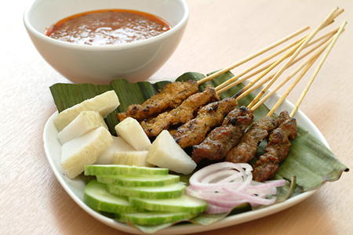

Satay Recipe

an Southeast Asian dish consisting of small pieces of meat grilled on a skewer and served with a spiced sauce that typically contains peanuts.
- ⏲️ Prep time: 10 min
- 🍳 Cook time: 15 min
- 🍽️ Servings: 4
Ingredients
- 2 lbs boneless chicken breast or thigh
- 1.5 tbsp oyster sauce
- 1 tbsp ground tumeric
- 2 tbsp sugar
- 2 tbsp coconut milk
- 3 tbsp peanut butter (creamy)
- 1 tbsp massaman curry paste
- water to thin peanut sauce
Directions
- Cut the chicken into 1/2 inch thick strips.
- Mix chicken with oyster sauce, tumeric, 1 tbsp sugar and coconut milk. Allow chicken to marinade for at least an hour.
- Optionally, you can skewer the meat with wooden skewers.
- Grill chicken until cooked through.
- Mix peanut butter, 1 tbsp sugar and curry paste together in a small saucepan. Add enough water to thin to a thick sauce.
- Cook for 1-2 min stirring frequently.
- Serve chicken with peanut sauce for dipping.
previous
next
home